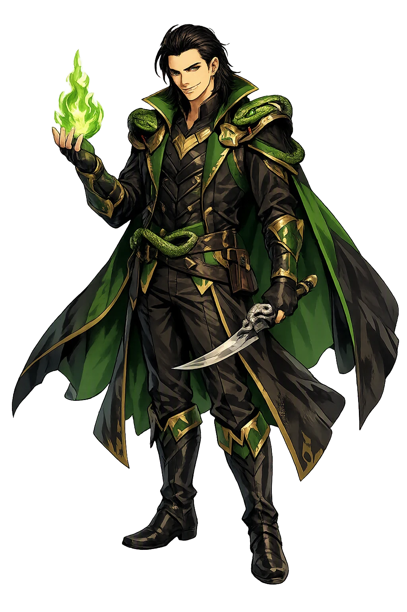
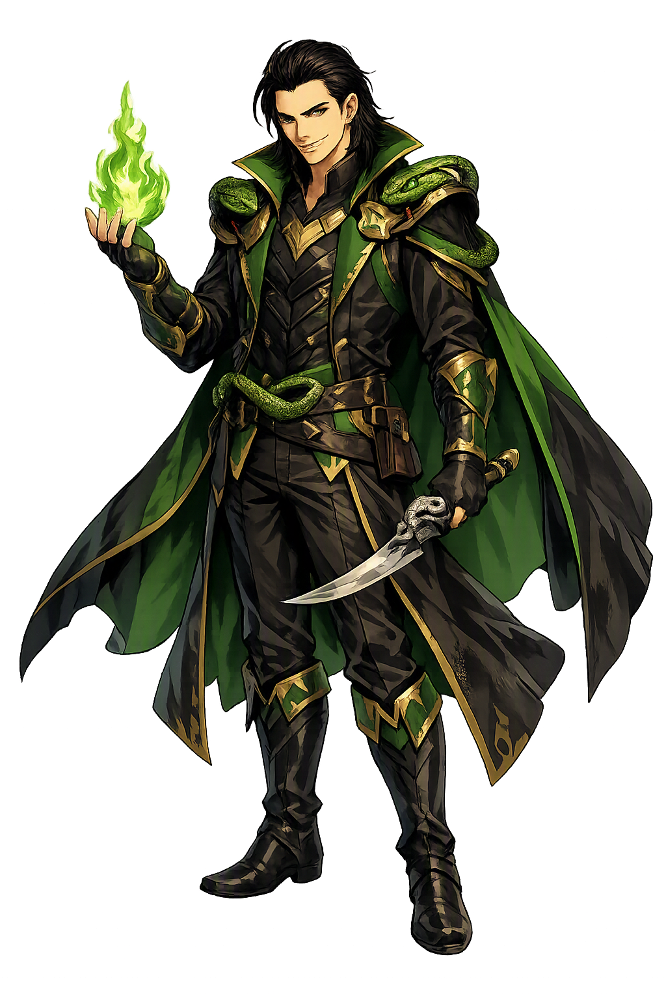

Unicode restoration and ASCII comparison
ᛚᚢᚴᛁ
The name in its original Norse form. Loki (ᛚᚢᚴᛁ) is attested in the source tradition — “Possibly knot, loop, or flame”. Its original diacritics and script distinctions carry the full phonetic and orthographic weight of the source tradition.
loki
The plain loki form is identical to the Unicode restoration. Because this name is already written in Latin letters, no diacritics, stress, or script information were lost — only capitalization differs.
Loki
The Unicode restoration does not need to recover lost marks for Loki. Its value is canonical spelling and consistent cataloguing, not the reconstruction of erased orthography. The domain is readable as-is to both DNS and humanity.
Loki.com → loki.com
The non-ASCII characters in Loki are encoded while the ASCII remains visible. To the DNS, it is Punycode. To humanity, it is Loki.
How Loki travels from ancient script to the modern URL
Owned, ideal, and ASCII forms of Loki
Loki
Restores ᛚᚢᚴᛁ. The full Unicode restoration. loki.com is not in the PuniCodex collection — it is watched for release; if it drops, this temple upgrades to an owned flagship.
How Loki was spoken
The domain of Loki
In the norse tradition, Loki is the trickster of the Æsir — counted among the gods, bound to them by an oath of blood-brotherhood with Óðinn, yet the son of the giant Fárbauti and the goddess Laufey, and the moving cause of their deepest grief. Skáldskaparmál teaches poets to call him the 'slanderer of the gods' and the 'thief of the gods': the one who cuts Sif's hair, bargains his own head against the dwarfs' craft, and finds the loophole in every oath sworn in Ásgarðr.
His shape is never fixed: salmon in the falls of Franangr, mare to the stallion Svaðilfari, fly at the dwarfs' bellows, old woman prying secrets from Frigg. Fire runs through his reputation — the eating contest he loses to Logi, wildfire itself — and chaos through his offspring: by the giantess Angrboða he fathers Fenrir the wolf, Jǫrmungandr the world-serpent, and Hel the queen of the dead, the three creatures the gods must bind, drown, and banish to keep the world standing.
Uninvited, Loki forces his way into the gods' feast and insults every god and goddess in turn, until only Þórr's hammer ends the night.
The one thing that never swore Frigg's oath; Loki finds it, shapes it, and guides the blind Hǫðr's hand — and Baldr falls.
Loki stakes his own head that the dwarf Brokkr's brother cannot out-craft the sons of Ívaldi; he loses, keeps his head on a technicality, and pays with sewn lips.
Bound with his own son's entrails beneath a dripping serpent, with Sigyn catching the venom in a bowl — and the world shakes when she turns to empty it.
Stories of Loki
Loki stands at the center of more Eddic narrative than any figure save Þórr and Óðinn — and almost every road through the mythology crosses him at least once. He is the gods' companion on the road, their rescuer in a pinch, and their ruin in the end: the same wit that recovers Mjǫllnir in Þrymskviða engineers the death of Baldr in Gylfaginning. The Eddas hold both truths without reconciling them, and Skáldskaparmál fixes the verdict in the kenning system itself, where poets are taught to name him the slanderer of the gods. By the giantess Angrboða he is the father of Fenrir, Jǫrmungandr, and Hel; by his wife Sigyn, of Nari and Váli, whose fates are spent in his own binding.
Deep in the flyting, when Óðinn moves to silence him, Loki invokes the oldest bond in the mythology: 'Do you remember, Óðinn, how in days of old we two blended our blood together? You said you would never taste ale unless it were brought to us both.' The blood-brotherhood oath — attested in the heroic lays as the rite that makes two men one — is the single fact that explains Loki's place among the Æsir: he is not one of them by birth, being the son of the giant Fárbauti, but he cannot be refused a seat while Óðinn's oath stands.
The poem's whole tragedy hangs on that stanza. Every insult Loki hurls is spoken from inside the oath's protection, and every crime he is accused of is a crime against the brothers of his blood. When the Æsir finally bind him, they are not punishing an enemy at the gate but a kinsman at the table — which is why the punishment is not death but endlessness.
Ægir the sea-giant brews ale for the gods, and Loki, uninvited, kills Ægir's servant Fimafeng out of sheer irritation at hearing him praised. Driven into the forest, he returns and forces his way back to the bench on the strength of the blood-oath — then works down the hall in order: Bragi, Iðunn, Gefjon, Óðinn, Frigg, Freyja, Njǫrðr, Týr, Freyr, Byggvir, Heimdallr, Skadi, Sif. To each he gives the one wound that will not close: cowardice, secret loves, sold favors, unacknowledged children. No one answers him in kind and wins; the flyting only ends when Þórr strides in from the east and three times vows to strike Loki's head from his shoulders with Mjǫllnir.
The prose epilogue tells what the poetry implies: this is the night the fellowship breaks. Loki flees to the falls of Franangr, and the Æsir's patience, which has survived the theft of Iðunn and the loss of Sif's hair, does not survive the flyting. The Lokasenna is the mythology's hinge — everything before it is mischief, everything after it is the binding and the end.
When Þórr wakes to find Mjǫllnir stolen and the giant Þrymr demands Freyja as the price, it is Loki who borrows Freyja's feather-coat and flies to Jǫtunheimr to learn the terms — and Loki who rides beside the disguised thunder-god as his 'maidservant'. At the wedding feast, when the bride devours a whole ox, eight salmon, and three vats of mead, it is Loki's ready tongue that saves the disguise: 'Freyja has eaten nothing for eight nights, so eager was she for Jǫtunheimr.' When Þrymr lifts the veil and flinches from the burning eyes, Loki answers again: 'She has not slept for eight nights, so eager was she.'
The poem shows the companion Loki, the one the gods cannot do without: Þórr supplies the hammer, but the expedition runs on Loki's wits. The Þrymskviða is the strongest evidence that the flyting's hatred was not the whole tradition — the same figure who ends as the Æsir's executioner begins as their most useful passenger.
For mischief — 'for love of mischief', Snorri says — Loki cuts off all of Sif's hair. Þórr seizes him and would break every bone in his body, and Loki buys himself free by swearing to get the black-elves to make Sif hair of gold that will grow like other hair. From the sons of Ívaldi come the golden hair, the ship Skíðblaðnir for Freyr, and the spear Gungnir for Óðinn. Then Loki wagers his own head with the dwarf Brokkr that Brokkr's brother Eitri cannot forge three treasures as good.
In the smithy Loki turns himself into a fly and stings Brokkr at the bellows — on the hand, on the neck, at last between the eyes — but the work holds: the boar Gullinbursti for Freyr, the ring Draupnir for Óðinn, and for Þórr the hammer Mjǫllnir, its handle short from the fly's sting yet judged the best of all, the defense of the gods. Loki has lost his head. He concedes the wager — and then observes that the head was Brokkr's but the neck was never in the bargain. The dwarfs, denied the cutting, sew his lips together instead; and when he tears the thong out, the scars remain. Nearly every wonder-weapon of the mythology exists because Loki cheated a craftsman.
When Baldr is plagued by dreams of his own death, Frigg takes oaths from all things — fire and water, iron and every metal, stones, earth, trees, sicknesses, beasts, birds, poison, serpents — that they will not harm him. Only one shoot was passed over: the mistletoe, which grows west of Valhǫll and seemed too young to swear. Loki, in the shape of a woman, draws the omission out of Frigg; he pulls up the mistletoe, carries it to the assembly where the Æsir amuse themselves by hurling weapons at the invulnerable Baldr, and puts it in the hand of the blind god Hǫðr, offering to guide his aim. The dart goes through Baldr, 'and he fell dead to the earth' — the greatest misfortune ever worked among gods and men.
The aftermath binds the story to Loki twice over. Hermóðr rides to Hel and wins the condition that all things must weep Baldr back; all things weep, except the cave-giantess who calls herself Þǫkk and weeps dry tears: 'let Hel hold what she has.' 'And this,' Snorri says, 'people believe was Loki Laufeyjarson, who has worked most evil among the Æsir.' The loophole he found in the oath is closed forever by his own refusal.
After the flyting Loki hides on the mountain of Franangr in a house with four doors, and by day takes salmon-shape in the falls below. Brooding on how the Æsir might take him, he devises the net — the first ever made — and burns it as Óðinn, watching from Hliðskjálf, spies out his refuge; the gods understand the ash-pattern, fashion the same net, and drag the falls until Kvasir catches the salmon in mid-leap. The Æsir then turn Loki's own blood against him: his son Váli is changed into a wolf and tears apart his brother Nari — called Narfi in the Lokasenna prose — and with Nari's entrails they bind Loki across three sharp stones. Skadi fastens a venomous serpent above his face.
There Sigyn, his wife, stations herself with a bowl and catches the venom as it drips. But when the bowl is full she must turn to empty it, and in that interval the drops fall on Loki's face; he writhes so hard that the whole earth shudders — 'and those are now called earthquakes.' So he lies, Snorri says, until Ragnarök. The Vǫluspá's sibyl saw the same scene generations before Snorri wrote it: 'There sits Sigyn, not at all glad over her husband.'
At Ragnarök the bonds give way. The ship Naglfar — built, Snorri warns, from the nails of the dead, which is why the prudent trim the nails of their corpses — breaks loose on the swelling sea, and Loki himself stands at the steering-oar, bringing the powers of Hel and the hosts of Muspell against the gods. The wolf Fenrir advances with jaws gaping from earth to heaven; Jǫrmungandr blows venom across sea and sky. The kin Loki fathered on Angrboða come home for the reckoning.
In the last melee on the field of Vígríðr, Loki meets Heimdallr — the watchman he once mocked in Ægir's hall, the god who once wrestled him for Freyja's necklace — and the two kill each other. The trickster's career ends not in triumph or pardon but in mutual slaying with the most vigilant of the Æsir: the loophole-closer and the watchman, evenly matched at the world's end. The Vǫluspá gives him his due in a single kenning: 'the kinsman of Býleistr' steers the ship from the east.
Names are not merely labels; they are compressed worlds. Loki compresses the most uncomfortable truth the North knew: that the thing which unbinds and the thing which binds are the same. If the uncertain etymology is right — the *luk- root, the knot, the lock, the closing — then his name is his whole story in two syllables: the mind that finds the loophole in every oath, and the god who ends tied in a knot of his own son's entrails while the world shakes with his writhing. The Eddas never resolve him into villain or benefactor, because the tradition's real subject is not morality but contingency: every wonder-weapon the gods own came through his cheating, and so did their death-wound. Unicode restoration has nothing to recover here — the name was never flattened; it arrived whole, which is its own kind of trick — and that too is worth saying plainly: Loki is Tier 2 not because he is lesser, but because this is one name the scribes and the ASCII machines spell exactly alike.
Enter Extended Lore